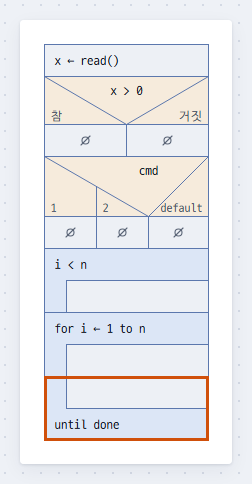
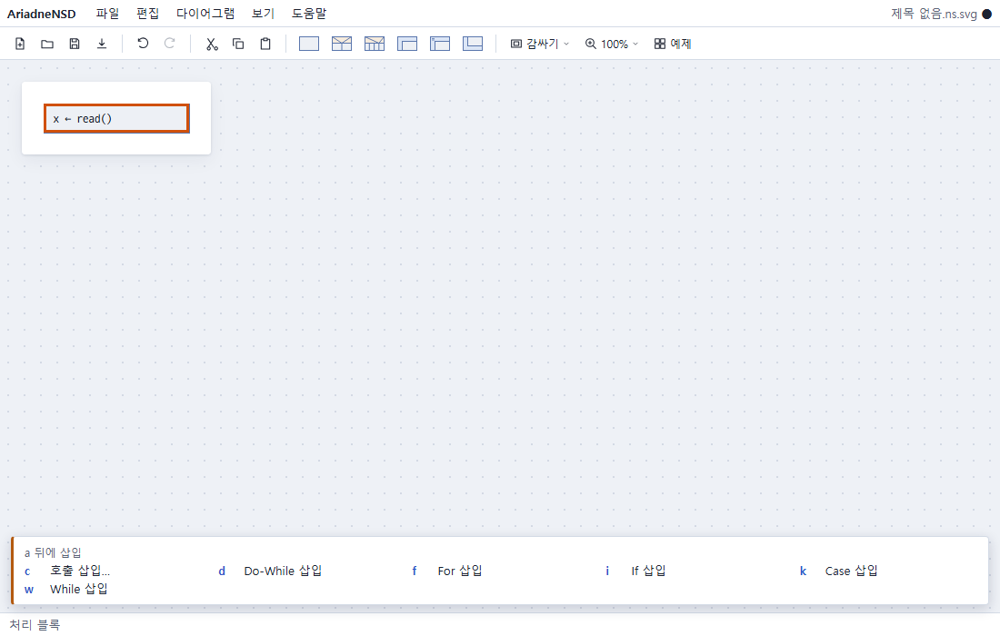
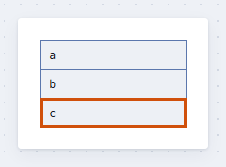
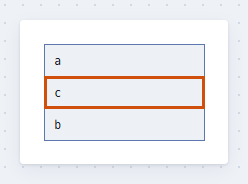
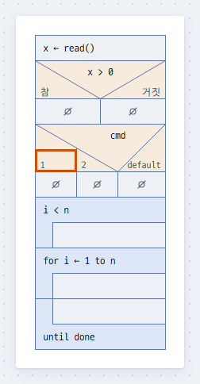
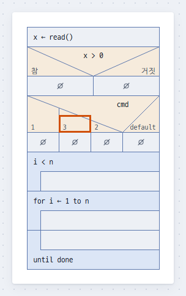
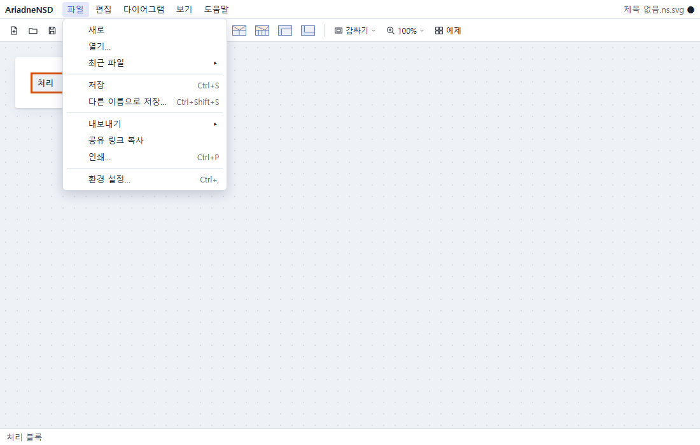
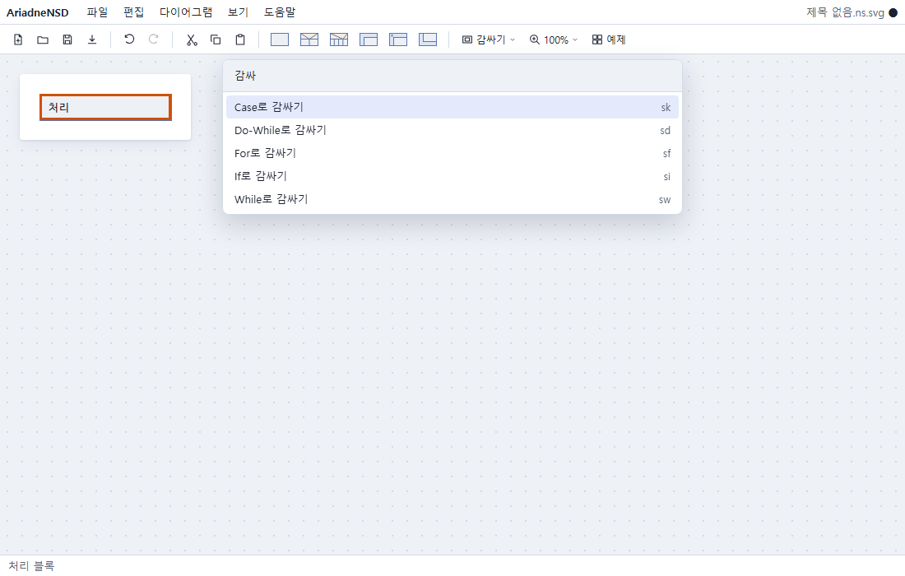
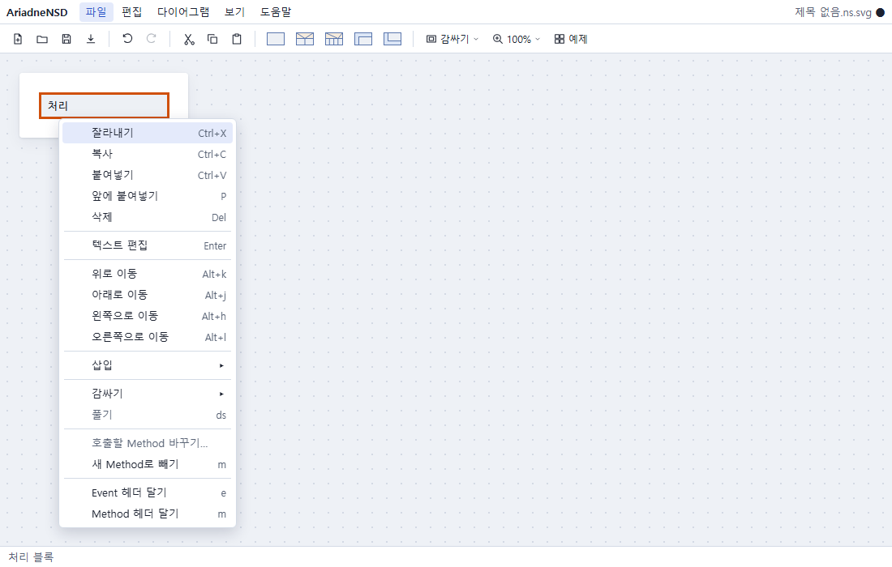

메뉴 바: 파일 · 편집 · 다이어그램 · 보기 · 도움말. 모든 명령이 여기에 있고, 키가 있으면
옆에 보입니다.
툴바: 새로 · 열기 · 저장 · 내보내기, 실행 취소 · 다시 하기, 잘라내기 · 복사 · 붙여넣기,
블록 아이콘 다섯(처리 · If · Case · While · Do-While), 감싸기, 확대 · 축소, 예제.
캔버스: 다이어그램을 그리는 곳. 다이어그램이 여럿이면 자동으로 늘어놓습니다.
상태 표시줄: 지금 선택한 것과 알림. 오른쪽 위의 파일 이름 옆 ●는 저장하지
않았다는 뜻입니다.
블록
블록 안의 텍스트는 자유롭게 적습니다. 코드든 문장이든 됩니다. 텍스트는 자동으로 줄을 바꾸지
않으니, 길면 Shift+Enter로 나눕니다. If · Case · 반복 블록의 조건은 조건
칸(While · For · If · Case는 위, Do-While은 아래)에 적습니다. 빈 칸의 ∅는 "여기는
비어 있음"이라는 표시입니다.

위에서부터 처리 · If · Case · While · For · Do-While
블록
뜻
종류 글자
처리
한 단계의 일
p (삽입에만. ap = o)
If
조건에 따라 참 · 거짓 두 분기
i
Case
값에 따라 여러 분기, 맨 끝은 default
k
While
조건을 먼저 보고 반복
w
For
정해진 횟수만큼 반복(모양은 While과 같고 조건 칸의 텍스트로 구분). 툴바에는 없고 키와
메뉴로 삽입
f
Do-While
한 번 하고 나서 조건을 보고 반복
d
호출
같은 문서의 Method를 호출
c
종류 글자는 삽입(aA)과 감싸기(s) 뒤에 이어 누르는 글자입니다.
이동과 선택
방향키는 그림에 보이는 순서대로 움직입니다. 여러 블록은 같은 줄에서 붙어 있는 것만 함께
선택됩니다. 깊이가 다른 블록을 Shift+클릭하면 둘을 함께 담는 범위로 넓어집니다.
하는 일
Vim 키
표준 키 · 마우스
위 · 아래 · 왼쪽 · 오른쪽
kjhl
↑↓←→, 클릭, 휠
제어 블록을 한 덩어리로 보고 위 · 아래
{}
Ctrl+↑↓
옆 분기로
Ctrl+←→
다이어그램의 처음 / 마지막 블록
gg / G
여러 블록 선택
V 다음 jk
Shift+↑↓, Shift+클릭
분기 라벨 선택
분기의 첫 블록에서 k
분기의 첫 블록에서 ↑, 이름을 클릭
선택 풀기
EscEsc
빈 캔버스를 클릭
삽입 · 텍스트 편집
새 블록은 선택한 것의 다음에, Shift를 함께 누르면 앞에 들어갑니다. 빈
블록(∅)을 선택했으면 그 자리를 채웁니다. 삽입하면 바로 텍스트(제어 블록은 조건
칸)를 적게 합니다. 적고 나서 Enter나 Esc를 누르면 편집이 완료됩니다.

a를 누르고 잠깐 기다리면 선택 바로 아래에 다음 글자가 보입니다.
하는 일
Vim 키
표준 키 · 마우스
처리 블록을 다음 / 앞에
o (또는 ap) / O (또는 Ap)
툴바의 처리 아이콘 / Shift+클릭
다른 블록을 다음 / 앞에
a / A + 종류 글자
툴바의 그 아이콘 / Shift+클릭, 아이콘을 블록 사이로 드래그 앤 드롭
텍스트 편집 시작
i, cc(비우고 새로)
Enter, F2, 더블클릭
편집 완료
Esc
Enter
호출 블록의 결과 칸 ↔ 인자 칸
Tab
이동 · 복사 · 삭제
이동은 선택한 것을 위 · 아래 블록과 자리를 바꿉니다. 끝에서 더 이동하면 담고 있던 블록 밖으로
나옵니다. 다른 블록 안으로 넣으려면 드래그 앤 드롭하거나 잘라내서 붙여넣습니다. 다른
프로그램에서 복사한 텍스트를 붙여넣으면 줄마다 처리 블록이 됩니다. 복사한 블록을 다른 프로그램에
붙여넣으면 들여쓴 텍스트가 됩니다. 호출 블록은 그림에 보이는 대로
결과 ← 이름(인자)입니다.

c를 선택한 채→

Alt+k로 위로 이동
하는 일
Vim 키
표준 키 · 마우스
위 · 아래로 이동 (분기는 왼쪽 · 오른쪽)
Alt+kj (hl)
Alt+↑↓ (←→), 블록을 드래그 앤
드롭
복사
yy
Ctrl+C
잘라내기
dd
Ctrl+X
다음 / 앞에 붙여넣기
p / P
Ctrl+V (다음에)
삭제 (복사하지 않음)
x
Delete, Backspace
감싸기 · 풀기, 분기 삽입
감싸기는 선택한 블록들을 새 제어 블록 안에 넣습니다(If는 참 분기, Case는 첫 분기에). 풀기는
반대로 껍데기만 없애고 안의 블록을 남깁니다. Case의 분기는 분기 라벨을 선택하고 블록처럼
삽입하고 삭제합니다. default는 늘 맨 끝입니다.

Case의 분기 라벨 1을 선택한 채→

o로 다음에 분기를 삽입하고 3을 적음
하는 일
Vim 키
표준 키 · 마우스
감싸기
s + 종류 글자
블록 아이콘을 Ctrl+클릭, 툴바의 "감싸기", 아이콘을 블록 위에 드래그 앤 드롭
풀기 (선택한 것을 담은 가장 가까운 제어 블록)
ds
컨텍스트 메뉴
분기 삽입 다음 / 앞 (분기 라벨을 선택한 채)
o / O
분기 삭제 (분기 라벨을 선택한 채)
x
Delete
분기 라벨 편집 (분기 안 어디서나)
L
이름을 더블클릭
If의 분기 라벨에서 분기를 삽입하면 Case로 바꿀지 묻습니다. If의 참 · 거짓을 맞바꾸면(이동)
조건은 그대로라 뜻이 바뀌니 조건을 수정하세요.
접기
긴 다이어그램은 접어서 봅니다. 제어 블록을 선택하고 f(또는 za)를 누르면 그
안쪽이 "⋯ 블록 n개" 한 줄로 접힙니다. If와 Case는 분기마다 접히고, 처리 블록 하나뿐인 분기는
접지 않습니다. 블록을 선택하고 누르면 그 블록을 담은 가장 가까운 것(접기 영역, 분기)이 접힙니다.
접힌 줄을 선택하고 한 번 더 누르면 펴집니다.
접기 영역은 블록 몇 개를 묶어 이름을 붙인 것입니다. 블록들을 선택하고 zf를
누르면 묶어서 바로 접고 이름을 묻습니다. 그냥 Enter를 누르면 "첫 블록의 텍스트 외
n개"가 이름처럼 보입니다. 펴면 굵은 테두리와 이름 띠가 남아 어디까지인지 보입니다. 이름 띠는
보기 › 접기 영역 보기로 끌 수 있습니다. 접힘과 이름은 파일에 함께 저장되고, 저장되는 그림도 화면
그대로입니다. 접고 펴는 것은 실행 취소의 대상이 아닙니다.
하는 일
Vim 키
표준 키 · 마우스
접기 · 펴기
za, f
펼침 삼각형 ▸▾을 클릭, 접힌 줄을 더블클릭
펴기만 / 접기만
zo / zc
접기 영역 만들기
zf
Shift+F
접기 영역 풀기 (블록은 남음)
zd
Ctrl+Shift+F
접기 영역의 이름 바꾸기 (이름 띠나 접힌 칸을 선택한 채)
i, cc
Enter, 더블클릭
접힌 칸 · 접힌 줄은 방향키로 블록 하나처럼 지나갑니다. 펴진 접기 영역의 첫 블록에서
↑를 누르면 이름 띠가 선택됩니다. 접힌 것은 통째로 이동 · 복사 · 삭제됩니다.
Event · Method와 여러 다이어그램
한 문서에 다이어그램을 여럿 둘 수 있습니다. 헤더를 달면 다이어그램이 Event(인터럽트,
타이머처럼 밖에서 시작되는 것)나 Method(호출 블록으로 호출하는 것)가 됩니다. 늘어놓는
것은 자동이어서 Event는 왼쪽, Method는 오른쪽에 모입니다. 호출 블록의 이름은 Method의 헤더를
따라가고, 블록마다 인자와 결과만 적습니다.
블록을 선택하고 m을 누르면 그 블록들이 새 Method가 되고, 그 자리에는 그
Method를 호출하는 호출 블록이 남습니다. 새 Method의 이름을 적고 Enter를 누르면 남은
호출 블록으로 돌아옵니다. 헤더 없는 다이어그램에서는 m이 "새 Method로 빼기"와 "Method
헤더 달기" 가운데 고르는 작은 목록을 띄웁니다. 실행 취소 한 번이면 블록이 제자리로 돌아옵니다.
호출 블록을 선택하고 f를 누르면 그 자리에 Method의 블록들이 펴 보입니다(보라
점선과 띠, 회색 텍스트). 보기만 바뀌고 내용은 그대로라, 펴 보인 블록은 선택하고 복사할 수 있지만
편집할 수는 없습니다. 펴 보인 블록들을 선택하고 zf를 누르면 그 호출 블록 자리에만
있는 접기 영역이 생깁니다. ds(풀기)는 호출 블록을 Method의 블록 사본으로
바꿉니다(Method로 빼기의 반대). 문서에 없는 함수는 목록의 "이름을 적어 호출하기"로 이름을 직접
적어 호출합니다.
헤더 모양("제목처럼" · "모자 · 아치")은 다이어그램 › 문서 설정에서 선택합니다. 마지막에 선택한
모양을 기억합니다. 같은 곳의 "그림 문구의 언어"는 편집기가 그림에 적는 고정 문구(If의 "참" ·
"거짓", "⋯ 블록 n개")의 언어입니다. 문서마다 정해 파일에 저장되므로, 화면 언어가 다른 사람이
열어도 그림이 같습니다. 새 문서는 화면 언어로 시작합니다.
문서 설정 맨 위의 "블록 텍스트의 언어"를 고르면 블록 텍스트를 코드처럼 칠합니다. 키워드,
문자열과 숫자, 주석이 저마다 다른 색입니다. 일반 텍스트(칠하지 않음), C, C++, Java, JavaScript ·
TypeScript, Python, Bash 가운데 고릅니다. 색만 바뀌고 블록의 크기와 자리는 그대로입니다. 처리
블록과 조건을 칠하고, 헤더 · 분기 라벨 · 호출 블록은 칠하지 않습니다. 저장한 파일과 PNG도 같은
색입니다. 새 문서는 일반 텍스트로 시작합니다.
테마, 고대비
테마는 그림의 색입니다. 다이어그램 › 문서 설정 › 테마에서 밝은 테마 · 어두운 테마 · 고대비(검은
바탕에 흰 선과 글자) · 흑백 인쇄 가운데 선택합니다. 문서마다 정해 파일에 저장되므로, 저장한 그림
· PNG · 인쇄물도 보이는 색 그대로입니다. 바꾼 것은 실행 취소할 수 있습니다. 어느 테마에서도
블록의 모양과 크기는 같습니다.
메뉴와 툴바는 컴퓨터의 밝은 · 어두운 모드를 따릅니다. 컴퓨터가 더 높은 대비를 요청하면(Windows의
대비 테마, macOS의 "대비 증가") 고대비 색으로 바뀝니다. 이것이 문서의 테마를 바꾸지는 않습니다.
그림은 테마에서 고대비를 선택하세요.
실행 취소, 확대 · 축소
감싸기처럼 여러 곳을 바꾸는 명령도 실행 취소 한 번으로 되돌립니다. 500단계까지 기억합니다.
하는 일
Vim 키
표준 키 · 마우스
실행 취소 / 다시 하기
u / U
Ctrl+Z / Ctrl+Y, Ctrl+R
확대 / 축소 (10%씩)
+ / -
Ctrl+휠 (마우스 자리를 중심으로), 툴바의 확대
100%로
보기 메뉴
파일
AriadneNSD는 서버 없이 브라우저에서만 돕니다. 파일은 내 컴퓨터에 그대로 남고, 브라우저에
저장하면 그 브라우저에 남습니다. 저장한 .ns.svg는 그 자체로 그림이라 어디서든
보이고, 같은 파일을 다시 열면 이어서 편집할 수 있습니다.

열기: 파일 메뉴, 툴바, 또는 파일을 페이지 위에 드래그 앤 드롭. .ns.svg와
.ns를 엽니다.
어디에서: 파일 › 열기…, 다른 이름으로 저장…, 새 문서의 첫 저장은 먼저 "이 컴퓨터의
파일"과 "이 브라우저" 가운데 어디인지 묻습니다. 마지막에 고른 쪽으로 열립니다. "이 컴퓨터의
파일"에서는 버튼을 한 번 더 누르면 컴퓨터의 파일 창이 열립니다. ←→로
쪽을 바꾸고, Esc로 닫습니다.
저장:Ctrl+S, 다른 이름으로 저장은
Ctrl+Shift+S. Chrome · Edge는 원래 파일에 쓰고, 한 번 저장한
뒤로는 자동으로 저장합니다. Firefox · Safari는 저장할 때마다 내려받습니다.
브라우저 문서: "이 브라우저"에서 이름을 붙여 파일 없이 저장합니다. 그 뒤로 이름 옆에
"브라우저" 딱지가 붙고, Ctrl+S와 자동 저장이 그리로 갑니다(모든
브라우저에서). 목록은 이름 · 고친 때 · 크기를 최신순으로 보이고, 열기(더블클릭이나
Enter), 이름 바꾸기…, 파일로 내보내기, 삭제(Delete, 먼저 묻습니다)를
합니다. 다른 이름으로 저장…으로 파일로 옮길 수 있습니다.
사본 두기: 브라우저 문서는 그 브라우저 안에만 있습니다. 브라우저의 사이트 데이터를
지우면 함께 지워지니, 가끔 파일로 내보내 두세요. "모두 파일로 내보내기 (.zip)"는 모두를 zip
하나로 저장하고, "파일에서 가져오기…"는 .ns.svg 파일이나 그 zip을 다시
들여옵니다(다른 브라우저 · 컴퓨터로 옮길 때도).
최근 파일: 파일 메뉴에서 열거나 저장한 파일을 열 개까지 다시 엽니다. 브라우저 문서는
"(브라우저)"가 붙습니다.
로컬 백업: 저장하지 않은 내용도 브라우저에 남아, 페이지를 다시 열면 복원할지 묻습니다.
파일로 연 문서는 다른 문서를 열어도 로컬 백업이 남고, 그 파일을 다시 열면 복원할지 묻습니다.
내보내기: 파일 › 내보내기 ▸ PNG · SVG · PDF. 모두 저장하는 그림과 같은 모습입니다.
SVG(그림만)는 저장하는 그림에서 안에 든 모델만 뺀 것입니다. 어디서나 그림으로 열리지만
AriadneNSD에서는 열리지 않으니, 나눌 때 쓰고 편집할 파일은 .ns.svg로 둡니다.
PDF는 큰 다이어그램을 인쇄 크기 그대로 여러 페이지로 나눕니다(A4, 미국 · 캐나다
등에서는 Letter). 되도록 블록 사이에서 자르고 쪽 번호를 답니다. 텍스트를 도형으로 그려 선택할
수 없고, 번들 글꼴에 없는 문자(한자 등)는 빈 상자로 보입니다. 그런 문서는 브라우저의 인쇄에서
PDF로 저장하세요.
인쇄: 파일 › 인쇄… 또는 Ctrl+P. PDF와 같은 페이지가 다이어그램만
담아 브라우저의 인쇄 창으로 갑니다.
텍스트를 외곽선으로: 다이어그램 › 문서 설정 › 텍스트를 외곽선으로 저장. 저장하는 그림이
텍스트를 도형으로 그려, 파일 안의 글꼴을 쓰지 않는 뷰어에서도 같은 글자 모양으로 보입니다.
문서에는 텍스트가 그대로 있어 계속 편집할 수 있습니다. 파일은 커집니다.
다른 도구로 고친 그림: 파일의 그림을 다른 프로그램(Inkscape 등)에서 고쳤으면 열 때
알립니다. AriadneNSD는 언제나 안에 든 모델로 그리고, 저장하면 그림을 다시 그리므로 그림에서만
고친 것은 사라집니다.
공유 링크: 파일 › 공유 링크 복사는 다이어그램 전체를 담은 링크를 복사합니다. 링크를 연
사람은 메뉴와 툴바 없이 그림만 보는 보기 모드로 보고, 확대하고 스크롤할 수 있습니다.
"편집하기"를 누르면 그 사람의 새 문서가 됩니다. 어디에도 올리지 않습니다: 다이어그램은 링크
자체(# 뒤의 부분, 브라우저가 서버로 보내지 않음)에 들어 있습니다. 링크를 가진
사람은 누구나 읽을 수 있으니 비밀은 이 방법으로 보내지 마세요. 8 KB가 넘는 링크는 경고와 함께
복사하고(긴 링크를 자르는 앱이 있습니다), 아주 큰 다이어그램은 파일로 공유합니다.
새 문서: 한 번도 저장하지 않은 새 문서(새로 만든 문서, 예제)를 편집한 채 다른 문서를
열면, 먼저 "한 번도 저장하지 않은 새 문서입니다. 다른 문서를 열면 다시 꺼낼 수 없습니다. 먼저
저장할까요?"라고 묻습니다. "저장"(Enter)은 저장한 뒤 열고, "브라우저에 저장"은 첫
다이어그램의 이름으로 이 브라우저에 저장한 뒤 열며, "버리고 열기"는 지금 문서를 버리고 열고,
"취소"(Esc)는 아무것도 열지 않습니다.
예제: 툴바의 "예제"나 도움말 › 예제…에서 열 가지를 엽니다. 예제는 새 문서로 열리므로
편집해도 됩니다. 예제는 화면 언어로 적혀 있습니다(영어 화면에서는 영어로).
AriadneNSD는 아직 1.0 전입니다. 지금 저장한 파일은 뒤의 버전에서 열리지 않을 수 있습니다.
AI에게 그려 달라고 하기
ChatGPT · Claude · Gemini 같은 AI에게 "https://ariadnensd.com 으로 버블 정렬을 NS 차트로 그려
주세요"처럼 부탁하면, AI가 그 다이어그램을 담은 공유 링크를 줍니다. AI는 이 편집기를 직접
조작하지 못하지만, 사이트에 있는 AI용 안내서(llms.txt)를 읽고
링크를 만듭니다.
링크를 누르면: 그 다이어그램이 보기 모드로 열립니다. "편집하기"를 누르면 내 새 문서가
됩니다.
AI에게 고쳐 달라고 할 때: 앱에서 고친 뒤 파일 › 공유 링크 복사로 만든 링크를 AI에게
붙여 주세요. 이 링크는 압축되어 있어서, 코드를 실행하지 못하는 AI는 저장한 파일을 달라고 할 수
있습니다. 그때는 파일 › 저장으로 만든 .ns.svg 파일을 첨부합니다.
링크가 열리지 않으면: 무엇이 틀렸는지(오류 내용)가 보입니다. "오류 내용 복사"를 눌러
링크를 만든 AI에게 붙여 주면 고친 링크를 다시 받을 수 있습니다.
AI가 엉뚱하게 답하면: "https://ariadnensd.com/llms.txt 를 읽고 공유 링크를 만들어
주세요"라고 덧붙입니다.
다이어그램은 링크 자체에 들어 있어 AriadneNSD는 어디에도 올리지 않습니다. 다만 AI에게 보낸
내용과 링크는 그 AI 서비스의 규칙을 따릅니다.
커맨드 팔레트 · 컨텍스트 메뉴
키가 생각나지 않으면 커맨드 팔레트에서 명령 이름의 일부를 쳐서 찾습니다. 줄마다 같은 일을 하는
키가 보입니다. 컨텍스트 메뉴에는 지금 선택한 것에 쓸 수 있는 명령만 나옵니다.

커맨드 팔레트에 "감싸"를 침

처리 블록의 컨텍스트 메뉴
하는 일
Vim 키
표준 키 · 마우스
커맨드 팔레트
Ctrl+Shift+P, F1
컨텍스트 메뉴
오른쪽 클릭, Shift+F10, 메뉴 키
목록에서 선택 / 실행 / 닫기
jk
↓↑ / Enter / Esc
문제 알리기
이상하게 움직이거나 그림이 틀리면 알려 주세요. 무엇을 했고(누른 키, 클릭한 곳), 무엇을 기대했고,
무엇이 일어났는지를 적어 주시면 고치기가 쉽습니다. 도움말 › AriadneNSD에 대하여의 버전과
브라우저 · OS도 함께 적어 주세요.